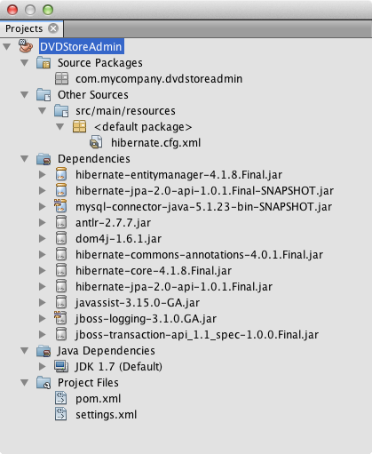
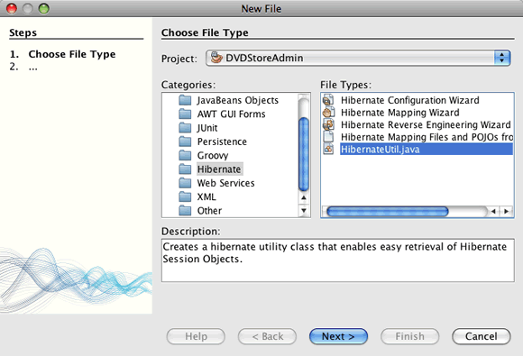

Apache NetBeans
Apache NetBeansLatest release
Создание приложения Swing Maven с использованием Hibernate - учебный курс по IDE NetBeans
| This tutorial needs a review. You can open a JIRA issue, or edit it in GitHub following these contribution guidelines. |
- Создание базы данных
- Настройка Maven
- Создание приложения Maven
- Добавление файлов Hibernate и зависимостей
- Создание файлов сопоставления библиотеки Hibernate и классов Java
- Создание графического интерфейса пользователя приложения
- Создание запроса в редакторе запросов HQL Query Editor
- Добавление запроса к форме
- Запуск проекта Maven
- Создание объектов POJO и файлов сопоставления по отдельности
- Дополнительные сведения
В этом учебном руководстве IDE NetBeans используется для создания приложения Swing Java на основе архетипа Maven. Приложение использует библиотеку Hibernate в качестве слоя сохранения состояния для извлечения POJO (простых объектов Java) из реляционной базы данных. В данном учебном курсе описано, как мастеры в среде IDE могут помочь в создании необходимых полей и добавить зависимости Hibernate в POM. После создания объектов Java и настройки приложения для использования Hibernate создается графический пользовательский интерфейс для поиска и отображения данных.
Поддержка Maven полностью интегрирована в IDE NetBeans, а Maven 3 входит в комплект в IDE. Вы можете создавать приложения с помощью набора архетипов Maven или с помощью архетипов в удаленных репозиториях в мастере создания проектов. Браузер репозитория Maven позволяет выполнять обзор локальных и удаленных репозиториев Maven, изучать артефакты и добавлять зависимости проекта к POM проекта.
Подробные сведения о создании приложения с использованием Ant приведены в разделе Использование библиотеки Hibernate в приложении Java на базе Swing.
Подробные сведения о создании приложения Maven Java EE приведены в разделе Создание приложения уровня предприятия с использованием Maven.

Figure 1. Содержимое этой страницы применимо к IDE NetBeans 7.2, 7.3, 7.4 и 8.0
Для работы с этим учебным курсом требуется следующее программное обеспечение и ресурсы.
| Программное обеспечение или материал | Требуемая версия |
|---|---|
пакет Java, версии 7.2, 7.3, 7.4, 8.0 |
|
версия 7 или 8 |
|
версия 2.09 или выше |
|
версия 5.x |
|
База данных "Sakila" |
подключаемый модуль, который можно получить в центре обновления |
Перед изучением этого учебного курса можно ознакомиться со следующей документацией:
-
Документация по Hibernate на сайте hibernate.org;
-
учебный курс Подключение к базе данных MySQL.
Можно загрузить готовый проект в виде архива ZIP.
Создание базы данных
В этом учебном курсе используется база данных MySQL с названием sakila . Пример базы данных не входит в устанавливаемую в среду IDE, поэтому перед изучением этого учебного курса необходимо создать базу данных.
База данных Sakila представляет собой свободно распространяемый пример базы данных MySQL, который можно найти на сайте MySQL. Для создания базы данных "Sakila" можно загрузить и установить подключаемый модуль "Sakila Sample Database" с использованием диспетчера подключаемых модулей. После установки подключаемого модуля можно создать базу данных "Sakila" в окне "Services". База данных "Sakila" будет добавлена к списку баз данных в диалоговом окне "Create MySQL database".
Для получения дополнительной информации о настройке среды IDE для работы с MySQL см. учебный курс Подключение к базе данных MySQL.
-
Откройте диспетчер подключаемых модулей и установите подключаемый модуль "Sakila Sample Database".
-
После установки подключаемого модуля, запустите сервера MySQL базы данных путем расширения узла 'Базы данных' в окне 'Службы', щелкните правой кнопкой мыши узел MySQL Server и выберите 'Запустить'.
-
Щелкните правой кнопкой мыши узел "MySQL Server" и выберите "Create Database".
-
Выберите базу данных "Sakila"из раскрывающегося списка "New Database Name" в диалоговом окне "Create MySQL Database". Нажмите кнопку "ОК".

Figure 2. Снимок диалогового окна создания базы данных MySQL
При нажатии клавиши OК среда IDE запустит сценарий, который создаст базу данных Sakila и заполнит ее таблицы. Результаты работы сценария можно увидеть в окне "Результаты". В серверный узел MySQL будет добавлен подузел для базы данных Sakila.
-
Щелкните правой кнопкой мыши узел "Sakila" и выберите "Connect".
При нажатии кнопки "Подключиться" узел подключения к базе данных "Sakila" ( jdbc:mysql://localhost:3306/sakila [по умолчанию: username] ) появится под узлом "Базы данных". При открытом подключении для просмотра данных в базе данных разверните этот узел подключения.
Настройка Maven
Maven входит в комплект среды IDE и устанавливается вместе с ней, но если это ваш первый проект Maven, следует проверить параметры конфигурации Maven в окне "Параметры".
-
Откройте окно 'Настройки' в IDE (Сервис > Параметры; NetBeans> Предпочтения на Mac).
-
Выберите в окне "Параметры" категорию "Java" и перейдите на вкладку "Maven".
-
Подтвердите указание домашней страницы Maven.
Можно использовать версию Maven, входящую в комплект среды IDE, либо указать местоположение локальной установки Maven (требуется версия 2.0.9 или более поздняя).
-
Для закрытия окна "Параметры" нажмите кнопку "ОК".
Примечания.
-
Поддержка Maven автоматически включается при включении Java в среде IDE. Если нет, необходимо включить подключаемый модуль Java EE.
-
В IDE NetBeans 7.1 и более ранних версиях IDE, вкладка Maven в окне 'Параметры' находится в категории 'Прочие'.
Просмотр репозиториев Maven
Артефакты, используемые Maven для создания всех проектов, сохраняются в локальном репозитории Maven. Если артефакт объявлен как зависимость проекта, он загружается в локальный репозиторий из одного из зарегистрированных удаленных репозиториев.
Некоторые известные индексированные репозитории Maven зарегистрированы и включены в браузер репозиториев по умолчанию. Зарегистрированные репозитории содержат большинство общедоступных артефактов, требуемых для создания проекта. Скорее всего, у вас не возникнет необходимости в регистрации дополнительных репозиториев, если ваш проект не содержит артефактов, имеющихся только в ваших личных репозиториях.
Можно просмотреть локальные и удаленные репозитории Maven и выполнять мгновенные проверки наличия обновлений в окне 'Службы'. Любой артефакт, имеющийся в вашем локальном или удаленном репозитории можно добавить в качестве зависимости проекта. Можно развернуть узел локального репозитория в окне 'Службы', чтобы увидеть артефакты, которые присутствуют на локальном уровне. Артефакты, приведенные в узле удаленного репозитория, могут быть добавлены в качестве зависимостей проекта, однако не все из них представлены локально. Они добавляются к локальному репозиторию только в том случае, если объявляются в качестве зависимостей проекта.
Для обзора и обновления репозиториев Maven выполните следующие шаги.
-
Выберите меню "Окно" > "Службы". Откроется окно "Службы".
-
Разверните узел репозиториев Maven в окне 'Службы' для просмотра репозиториев.
-
Разверните узел репозитория для просмотра артефактов.
-
Щелкните правой кнопкой мыши узел репозитория и выберите 'Обновить индекс' в контекстном меню для обновления репозитория.

Figure 3. Репозитории Maven в окне 'Службы'
Когда курсор находится над артефактом, среда IDE отображает всплывающую подсказку с координатами артефакта. Чтобы просмотреть дополнительную информацию об артефакте, дважды щелкните файл JAR артефакта..
Для поиска артефактов, щелкните правой кнопкой узел мыши узел 'Репозитории Maven' в окне 'Службы' и выберите 'Найти'.
Дополнительные сведения об управлении зависимостями путями к классам Maven и работе с репозиториями Maven в среде IDE см. в разделе Управление зависимостями в Best Practices for Apache Maven in IDE NetBeans.
Примечания для IDE NetBeans 7.1 и более ранних версий среды IDE.
-
Выберите пункт меню "Окно > Прочее > Браузер репозиториев Maven" для просмотра репозиториев Maven.
-
Вы можете использовать кнопки на панели инструментов в браузере репозиториев Maven для обновления индексов и поиска артефактов.
Создание приложения Maven
В это учебном курсе мы создадим простой проект приложения Java Swing под названием DVDStoreAdmin. Проект будет создан на основе одного из включенных в набор архетипов Maven, после чего настройки проекта, определенные по умолчанию, будут изменены.
Выбор архетипа
Мастер создания проектов позволяет создавать проекты Maven с помощью архетипа Maven. Среда IDE включает в себя несколько архетипов для общих типов проекта NetBeans, кроме того, в мастере можно выбрать архетипы из удаленных репозиториев.
-
Выберите 'Файл' > 'Новый проект' (Ctrl-Shift-N; ⌘-Shift-N в Mac) в главном меню, чтобы открыть мастер создания проектов.
-
Выберите приложение Java из категорий Maven. Нажмите кнопку "Далее".

Figure 4. Архетипы Maven в мастере создания проектов
-
Введите DVDStoreAdmin в качестве имени проекта и укажите местоположение проекта.
-
Измените указанные по умолчанию значения для "Group Id" и "Version" (необязательно).
Значения "Group Id" и "Version" используются в качестве координат артефакта в локальном репозитории при создании проекта.
-
Нажмите кнопку "Завершить".
После нажатия кнопки "Готово" проект Maven будет создан в среде IDE и открыт в окне "Проекты". Среда IDE автоматически создает класс App.java в пакете com.mycompany.dvdstoreadmin . Вы можете удалить этот класс ( App.java ), поскольку он не требуется приложению для работы.
Примечание. Если это первое создание проекта Maven, нужно будет загрузить необходимые подключаемые модули и артефакты в локальный репозиторий. Это может занять некоторое время.
Изменение свойств проекта
При создании проекта Maven с помощью мастера свойства этого проекта основываются на архетипе. В некоторых случаях может возникнуть необходимость изменения свойств, установленных по умолчанию, в соответствии с требованиями системы и проекта. Например, чтобы подтвердить, что в данном проекте уровень исходного кода установлен в 1.5 или выше, поскольку в проекте используются аннтации, выполните следующие действия.
-
Щелкните правой кнопкой узел проекта и выберите команду "Свойства".
-
Выберите в окне "Свойства" категорию "Источники".
-
Убедитесь, что для выбранного в раскрывающемся списке формата 'Исходный/Двоичный' задано значение 1,5 или выше.
-
Для свойства "Кодировка" выберите из раскрывающегося списка значение "UTF-8". Нажмите кнопку "ОК".
Добавление файлов Hibernate и зависимостей
Для добавления поддержки Hibernate необходимо сделать библиотеки Hibernate доступными, объявив необходимые артефакты в качестве зависимостей в POM. В среде IDE содержатся мастеры, упрощающие создание файлов библиотеки Hibernate, которые потребуются в проекте. Мастеры, включенные в среду IDE, могут использоваться для создания файла настройки библиотеки Hibernate и вспомогательного служебного класса. При создании файла настройки Hibernate с помощью мастера среда IDE автоматически обновляет POM для добавления зависимостей Hibernate в проект.
Зависимости к проекту можно добавить в окне "Проекты" или путем изменения файла pom.xml . Чтобы добавить зависимости в окне 'Проекты', щелкните правой кнопкой мыши узел 'Зависимости' в окне 'Проекты' и выберите 'Добавить зависимость' во вплывающем меню, чтобы открыть диалоговое окно 'Добавить зависимость'. При добавлении зависимостей среда IDE обновляет POM и загружает в локальный репозиторий все требуемые артефакты, отсутствующие в нем.
Для непосредственного изменения pom.xml откройте файл, раскрыв узел "Файлы проекта" в окне "Проекта" и дважды щелкнув pom.xml .
Создание файла настройки библиотеки Hibernate
Файл настройки библиотеки Hibernate ( hibernate.cfg.xml ) содержит информацию о подключении к базе данных, сопоставлениях ресурсов и других свойствах подключения. При создании файла настройки Hibernate с использованием мастера подключение к базе данных определяется путем выбора из списка подключений, зарегистрированных в среде IDE. В ходе создания файла настройки подробная информация о подключении и сведения о диалекте добавляются автоматически в соответствии с выбранным подключением к базе данных. Среда IDE автоматически изменяет POM, добавляя требуемые зависимости Hibernate. После создания файла настройки можно изменить файл с использованием редактора с несколькими представлениями или внести изменения в код XML непосредственно в редакторе XML.
-
Щелкните правой кнопкой соединение с базой данных Sakila в окне "Службы" и выберите команду "Подключить".
-
Щелкните правой кнопкой мыши узел "Source Packages" в окне "Projects" и выберите "New > Other" для открытия мастера "New File".
-
Выберите элемент "Hibernate Configuration Wizard" из категории "Hibernate". Нажмите кнопку "Далее".
-
Сохраните имя файла по умолчанию (
hibernate.cfg). -
Нажмите кнопку "Обзор" и укажите для местоположения файла путь к каталогу
src/main/resources(если он еще не указан). Нажмите кнопку "Далее". -
Выберите подключение "sakila" из раскрывающегося списка "Database Connection". Нажмите кнопку "Завершить".

Figure 5. Диалоговое окно для выбора подключения к базе данных
При нажатии кнопки "Готово" среда IDE открывает файл hibernate.cfg.xml в редакторе. Файл настройки содержит информацию об отдельной базе данных.
Если развернуть узел "Зависимости" в окне проекта, можно убедиться, что среда IDE добавила необходимые артефакты Hibernate. Под узлом "Зависимости" среда IDE выводит все прямые и промежуточные зависимости, необходимые для компиляции проекта. Артефакты, являющиеся прямыми зависимостями (зависимостями, определенными в файле POM проекта), отмечены цветными значками JAR. Значок артефакта имеет серый цвет, если артефакт является промежуточной зависимостью (артефакт, являющийся зависимостью одной или нескольких прямых зависимостей).

Figure 6. Зависимости под узлом 'Библиотеки' в окне 'Проекты'
Для просмотра ведений об артефактах щелкните правой кнопкой мыши JAR и выберите 'Просмотреть сведения об артефактах'. Окно "Artifact Viewer" содержит вкладки, показывающие информацию о выделенных артефактах. Например, на вкладке "Общие" представлены подробные сведения о координатах артефакта и его доступных версиях. На вкладке "График" показано визуальное представление зависимостей выделенного артефакта.

Figure 7. Вкладка 'Графики' или средство просмотра артефактов, в которых отображаются расхождения
Также можно использовать вкладку "График" для обнаружения и устранения конфликта версий между зависимостями.
Изменение файла настройки библиотеки Hibernate
В этом упражнении будут изменены свойства по умолчанию, указанные в hibernate.cfg.xml , для включения функции протоколирования отладки для операторов SQL. Данное упражнение не является обязательным.
-
Откройте
hibernate.cfg.xmlна вкладке "Проект". Для открытия файла можно развернуть узел "Configuration Files" в окне "Projects" и дважды щелкнутьhibernate.cfg.xml. -
Разверните узел "Configuration Properties" в области "Optional Properties".
-
Нажмите кнопку "Add" для открытия диалогового окна "Add Hibernate Property".
-
В диалоговом окне выберите свойство
hibernate.show_sqlи установите значениеtrue. Нажмите кнопку "ОК". Это приведет ко включению протоколирования отладки операторов SQL.

Figure 8. Диалоговое окно 'Добавить свойство Hibernate', в котором отображаются значения настроек для свойства hibernate.show_sql
-
Щелкните "Добавить" в узле "Различные свойства" и выберите
hibernate.query.factory_classв раскрывающемся списке "Имя свойства". -
Введите org.hibernate.hql.internal.classic.ClassicQueryTranslatorFactory в текстовое поле. Нажмите кнопку "ОК".
Примечание. Не выбирайте значение из раскрывающегося списка.

Figure 9. Диалоговое окно 'Добавить свойство Hibernate', в котором отображаются значения настроек для свойства hibernate.query.factory_class property
При выборе вкладки "XML" в редакторе можно просмотреть файл в режиме XML. Файл должен выглядеть примерно так:
<hibernate-configuration>
<session-factory name="session1">
<property name="hibernate.dialect">org.hibernate.dialect.MySQLDialect</property>
<property name="hibernate.connection.driver_class">com.mysql.jdbc.Driver</property>
<property name="hibernate.connection.url">jdbc:mysql://localhost:3306/sakila</property>
<property name="hibernate.connection.username">root</property>
<property name="hibernate.connection.password">######</property>
<property name="hibernate.show_sql">true</property>
<property name="hibernate.query.factory_class">org.hibernate.hql.internal.classic.ClassicQueryTranslatorFactory</property>
</session-factory>
</hibernate-configuration>-
Сохраните измененный файл.
После запуска приложения появится возможность просмотра запроса SQL, представленного в окне "Output" среды IDE.
Создание вспомогательного файла HibernateUtil.java
Для использования библиотеки Hibernate необходимо создать вспомогательный класс для обработки запуска и обращения к SessionFactory библиотеки Hibernate для получения объекта "Session". Класс обеспечивает вызов метода configure() библиотеки Hibernate, загрузку файла настройки hibernate.cfg.xml и последующую сборку SessionFactory для получения объекта "Session".
В этом разделе для создания вспомогательного класса HibernateUtil.java используется мастер создания файла.
-
Щелкните правой кнопкой мыши узел "Source Packages" и выберите "New > Other" для открытия мастера "New File".
-
Выберите "Hibernate" из списка "Categories" и "HibernateUtil.java" из списка "File Types". Нажмите кнопку "Далее".
-
Введите HibernateUtil в качестве имени класса и sakila.util в качестве имени пакета. Нажмите кнопку "Завершить".

Figure 10. Мастер служебных программ Hibernate
После нажатия кнопки "Finish" в редакторе откроется класс HibernateUtil.java . Файл можно закрыть, т.к. необходимость в его изменении отсутствует.
Создание файлов сопоставления библиотеки Hibernate и классов Java
В этом руководстве для отображения данных в таблице "ACTOR" базы данных используется простой старый объект Java (POJO) Actor.java . Класс указывает поля для столбцов в таблицах и использует простые методы установки и получения значений для извлечения и записи данных. Для сопоставления Actor.java с таблицей "ACTOR" можно использовать файл сопоставления библиотеки Hibernate или аннотации в классе.
Мастер обратного проектирования, файлы отображения библиотеки Hibernate и объекты POJO могут использоваться в мастере "Database" для создания нескольких объектов POJO и файлов отображения на основе выбранных таблиц базы данных. Кроме того, в среде IDE можно использовать мастеры для упрощения создания отдельных объектов POJO и файлов сопоставления "с нуля".
Примечание. При создании нескольких таблиц целесообразно использовать мастер. Однако в этом учебном курсе будет создан только один объект POJO и один файл отображения, поэтому можно создать эти файлы по отдельности. Действия по созданию объектов POJO и файлов сопоставления по отдельности приведены в конце данного учебного курса.
Создание файла обратного проектирования
Для использования объектов POJO и файлов сопоставления в мастере "База данных" необходимо сначала создать файл обратного проектирования reveng.xml в папке src/main/resources , в которой был создан файл hibernate.cfg.xml .
-
Щелкните правой кнопкой мыши узел "Source Packages" и выберите "New > Other" для открытия мастера "New File".
-
В списке "Categories" выберите "Hibernate", а в списке "File Types" выберите "Hibernate Reverse Engineering Wizard". Нажмите кнопку "Далее".
-
Введите имя файла hibernate.reveng.
-
Определите *
src/main/resources* в качестве местоположения. Нажмите кнопку "Далее". -
Выберите элемент actor на панели "Available Tables" и нажмите кнопку "Add". Нажмите кнопку "Завершить".
Мастер создает файл обратного проектирования hibernate.reveng.xml . Файл обратного проектирования можно закрыть, поскольку его изменение не требуется.
Примечание. Для этого проекта требуется библиотека jar коннектора MySQL ( mysql-connector-jar-5.1.13.jar , например). Если подходящий JAR не указан как зависимость проекта в узле 'Зависимости', можно добавить зависимость, щелкнув правой кнопкой узел мыши узел 'Зависимости' и выбрав 'Добавить зависимость'.
Создание файлов сопоставления библиотеки Hibernate и объектов POJO на основе базы данных
Мастер создания файлов сопоставления библиотеки Hibernate и объектов POJO на основе базы данных создает файлы на основе таблиц, содержащихся в базе данных. При использовании этого мастера среда IDE создает объекты POJO и файлы отображения на основе таблиц базы данных, указанных в hibernate.reveng.xml , а затем добавляет записи отображения в файл hibernate.cfg.xml . При применении мастера можно выбрать файлы, которые должны быть созданы в среде IDE (например, только объекты POJO), и установить свойства создания кода (например, создание кода, использующего аннотации EJB 3).
-
Щелкните правой кнопкой мыши узел "Source Packages" в окне "Projects" и выберите "New > Other" для открытия мастера "New File".
-
Выберите "Hibernate Mapping Files and POJOs from a Database" в категории "Hibernate". Нажмите кнопку "Далее".
-
Выберите файл
hibernate.cfg.xmlиз раскрывающегося списка "Hibernate Configuration File", если он еще не выбран. -
Выберите файл
hibernate.cfg.xmlиз раскрывающегося списка "Hibernate Reverse Engineering File", если он еще не выбран. -
Убедитесь в том, что выбраны пункты Domain Code и Hibernate XML Mappings.
-
Введите sakila.entity в качестве имени пакета в поле "Package". Нажмите кнопку "Завершить".

Figure 11. Мастер создания файлов сопоставления Hibernate и POJO
После нажатия кнопки "Готово" в среде IDE создается объект POJO Actor.java со всеми необходимыми полями, сохраняемый в папке src/main/java/sakila/entity . Кроме того, в среде IDE создается файл сопоставления библиотеки Hibernate в папке src/main/resources/sakila/entity , а запись сопоставления добавляется в файл hibernate.cfg.xml .
Теперь при наличии объектов POJO и необходимых файлов, связанных с библиотекой Hibernate для приложения можно создать простой внешний графический интерфейс пользователя на Java. Также необходимо создать, а затем добавить запрос HQL, обеспечивающий извлечение данных из базы данных. В рамках этого процесса для построения и тестирования запроса будет использован редактор HQL.
Создание графического интерфейса пользователя приложения
В этом упражнении будет создана простая форма JFrame с определенными полями для ввода и отображения данных. Также будет добавлена кнопка, инициирующая запрос к базе данных для извлечения данных.
При отсутствии знаний об использовании GUI Builder для создания форм можно ознакомиться с учебным курсом Введение в разработку графического интерфейса.
Создание формы Jframe
-
Щелкните правой кнопкой мыши узел проекта в окне "Projects" и выберите "New > Other" для открытия мастера создания файла.
-
Выберите шаблон "JFrame Form" из категории "Swing GUI Forms". Нажмите кнопку "Далее".
-
Введите DVDStoreAdmin в поле "Class Name" и sakila.ui в поле "Package". Нажмите кнопку "Завершить".
После нажатия кнопки "Готово" в среде IDE создается класс, а в представлении "Дизайн" редактора открывается форма JFrame.
Добавление элементов к форме
Теперь необходимо добавить элементы пользовательского интерфейса к форме. При открытии формы в представлении "Проект" в правой части рабочей области среды IDE появляется элемент "Палитра". Для добавления элемента к форме перетащите элемент с палитры в область формы. После добавления элемента к форме необходимо изменить значение по умолчанию свойства "Variable Name" для этого элемента.
-
Перетащите элемент "Label" из палитры и измените текст на Actor Profile.
-
Перетащите элемент "Label" с палитры и измените текст на First Name.
-
Перетащите элемент "Text Field", поместите его рядом с меткой "First Name" и удалите текст по умолчанию.
При удалении текста по умолчанию текстовое поле сворачивается. Позже можно будет изменить размер текстового поля для настройки выравнивания элементов формы.
-
Перетащите элемент "Label" с палитры и измените текст на Last Name.
-
Перетащите элемент "Text Field", поместите его рядом с меткой "Last Name" и удалите текст по умолчанию.
-
Перетащите элемент "Button" с палитры и измените текст на Query.
-
Перетащите элемент "Table" с палитры в форму.
-
Измените значения "Variable Name" следующих элементов пользовательского интерфейса в соответствии со значениями, приведенными в следующей таблице.
Вы можете изменить значение 'Имя переменной' для элемента, щелкнув правой кнопкой мыши элемент в представлении конструктора и выбрав 'Изменить имя переменной'. Кроме того, значение "Variable Name" можно изменить непосредственно в окне "Inspector".
Присвоение значений "Variable Name" элементам "Label" не требуется.
| Элемент | Имя переменной |
|---|---|
Текстовое поле "First Name" |
|
Текстовое поле "Last Name" |
|
Кнопка "Query" |
|
Таблица |
|
-
Измените размер текстового поля и выровняйте элементы формы.
Можно активировать свойство "Переменная ширина" для текстовых полей, чтобы обеспечить изменение размера текстовых полей вместе с окном и идентичность расстояний между элементами.
-
Сохраните изменения.
В режиме проектирования внешний вид формы выглядит так, как показано на следующем рисунке.

Figure 12. Форма графического интерфейса пользователя в представлении проектирования редактора
На этом этапе уже создана форма, и теперь необходимо создать код, обеспечивающий присваивание событий элементам формы. В следующем упражнении будут созданы запросы для извлечения данных на основе языка Hibernate Query Language. После создания запросов к форме будут добавлены методы, обеспечивающие вызов соответствующего запроса при нажатии кнопки "Query".
Создание запроса в редакторе запросов HQL Query Editor
В среде IDE создание и тестирование запросов на основе языка Hibernate Query Language (HQL) может осуществляться с использованием редактора запросов HQL Query Editor. После ввода запроса в редакторе отображается эквивалентный (переведенный) запрос SQL. При нажатии кнопки "Run HQL Query" на панели инструментов в среде IDE запрос выполняется, а результаты отображаются в нижней области редактора.
В этом упражнении редактор HQL Editor применяется для создания простых запросов HQL, позволяющих извлекать список подробных данных актеров на основе соответствия имени или фамилии. Перед добавлением запроса к классу редактор HQL Query Editor должен использоваться для проверки правильной работы подключения и корректности результатов запроса. Перед выполнением запроса необходимо скомпилировать приложение.
-
Правой кнопкой мыши щелкните узел проекта и выберите команду "Построить".
При нажатии кнопки "Сборка" IDE загрузит необходимые артефакты в локальный репозиторий Maven.
-
Раскройте узел исходного пакета
<default package>в узле "Другие исходные файлы" окна "Проекты". -
Щелкните правой кнопкой мыши файл
hibernate.cfg.xmlи выберите "Run HQL Query" для открытия редактора HQL Editor. -
Протестируйте подключение путем ввода
from Actorв редакторе запросов HQL Query Editor. Нажмите кнопку 'Выполнить запрос HQL' ( ) на панели инструментов.
) на панели инструментов.
При нажатии кнопки "Run HQL Query" результаты запроса должны отображаться в нижней области редактора запросов HQL Query Editor.

Figure 13. Редактор запросов HQL с отображением результатов запроса HQL
-
Введите следующий запрос в редактор запросов HQL Query Editor и нажмите кнопку "Выполнить запрос HQL" для проверки результатов запроса при вводе значения "PE" в строку поиска.
from Actor a where a.firstName like 'PE%'Запрос возвращает список подробных данных тех актеров, чьи имена начинаются с символов "PE".
При нажатии кнопки "SQL", размещенной над результатами, на экране должен отобразиться соответствующий эквивалентный запрос SQL.
select actor0_.actor_id as col_0_0_ from sakila.actor actor0_ where (actor0_.first_name like 'PE%' )-
Откройте новую вкладку редактора HQL Query Editor и введите следующий запрос на панели редактирования. Нажмите кнопку "Run HQL Query".
from Actor a where a.lastName like 'MO%'Запрос возвращает список подробных данных актеров, чьи фамилии начинаются с символов "МО".
Тестирование запросов показывает, что запросы возвращают требуемые результаты. Теперь необходимо внедрить запросы в приложение и обеспечить вызов соответствующего запроса путем нажатия кнопки "Query" в форме.
Добавление запроса к форме
Теперь необходимо изменить DVDStoreAdmin.java для добавления строк запроса и создания методов, позволяющих формировать и вызывать запрос, включающий входные переменные. Также требуется изменить обработчик событий нажатия кнопок для вызова соответствующего запроса и добавить метод, обеспечивающий отображение результатов запроса в таблице.
-
Откройте
DVDStoreAdmin.javaи выберите вкладку "Source". -
Добавьте следующие строки запроса (выделенные полужирным шрифтом) к классу.
public DVDStoreAdmin() {
initComponents();
}
*private static String QUERY_BASED_ON_FIRST_NAME="from Actor a where a.firstName like '";
private static String QUERY_BASED_ON_LAST_NAME="from Actor a where a.lastName like '";*Запросы можно скопировать из вкладок редактора запросов HQL Query Editor в файл, а затем изменить код.
-
Добавьте следующие методы для создания запроса на основе строки со вводимой пользователем информацией.
private void runQueryBasedOnFirstName() {
executeHQLQuery(QUERY_BASED_ON_FIRST_NAME + firstNameTextField.getText() + "%'");
}
private void runQueryBasedOnLastName() {
executeHQLQuery(QUERY_BASED_ON_LAST_NAME + lastNameTextField.getText() + "%'");
}Эти методы обеспечивают вызов метода с именем executeHQLQuery() и создание запроса путем объединения строки запроса с информацией пользователя, вводимой в строку поиска.
-
Добавьте метод
executeHQLQuery().
private void executeHQLQuery(String hql) {
try {
Session session = HibernateUtil.getSessionFactory().openSession();
session.beginTransaction();
Query q = session.createQuery(hql);
List resultList = q.list();
displayResult(resultList);
session.getTransaction().commit();
} catch (HibernateException he) {
he.printStackTrace();
}
}Метод executeHQLQuery() обеспечивает вызов библиотеки Hibernate для выполнения выбранного запроса. В этом методе служебный класс HibernateUtil.java применяется для получения объекта Hibernate "Session".
-
Исправьте параметры импорта для добавления операторов импорта в библиотеки Hibernate (
org.hibernate.Query,org.hibernate.Session) иjava.util.List. -
Создайте обработчик событий для кнопки "Query", переключившись в режим проектирования и дважды нажав кнопку "Query".
В среде IDE будет создан метод queryButtonActionPerformed , который затем отобразится в режиме просмотра исходного кода.
-
Измените метод
queryButtonActionPerformedв режиме просмотра исходного кода путем добавления следующего кода, обеспечивающего выполнение запроса при нажатии кнопки пользователем.
private void queryButtonActionPerformed(java.awt.event.ActionEvent evt) {
*if(!firstNameTextField.getText().trim().equals("")) {
runQueryBasedOnFirstName();
} else if(!lastNameTextField.getText().trim().equals("")) {
runQueryBasedOnLastName();
}*
}-
Добавьте следующий метод для просмотра результатов в "JTable".
private void displayResult(List resultList) {
Vector<String> tableHeaders = new Vector<String>();
Vector tableData = new Vector();
tableHeaders.add("ActorId");
tableHeaders.add("FirstName");
tableHeaders.add("LastName");
tableHeaders.add("LastUpdated");
for(Object o : resultList) {
Actor actor = (Actor)o;
Vector<Object> oneRow = new Vector<Object>();
oneRow.add(actor.getActorId());
oneRow.add(actor.getFirstName());
oneRow.add(actor.getLastName());
oneRow.add(actor.getLastUpdate());
tableData.add(oneRow);
}
resultTable.setModel(new DefaultTableModel(tableData, tableHeaders));
}-
Исправьте параметры импорта (CTRL+SHIFT+I) для добавления
java.util.Vectorи сохраните измененные данные.
После сохранения формы можно запустить проект.
Запуск проекта Maven
После завершения написания программы вы можете создать проект и запустить приложение. При создании проекта Maven в среде IDE, Maven считывает POM проекта для идентификации его зависимостей. Все артефакты, определенные как зависимости, должны при этом находиться в локальном репозитории Maven. Если требуемый артефакт отсутствует в локальном репозитории, то перед попыткой создания и запуска проекта Maven выполнит его поиск в удаленном репозитории. После создания проекта Maven установит сгенерированный двоичный файл в качестве артефакта в локальном репозитории.
Примечания.
-
Создание и выполнение проекта в первый раз может занять некоторое время на проверку средой IDE всех зависимостей проекта. Последующие создания выполняются намного быстрее.
-
Для запуска данного приложения сначала необходимо определить класс Main.
Чтобы скомпилировать и запустить приложение выполните следующие действия.
-
Щелкните правой кнопкой мыши узел проекта в окне "Проекты" и выберите команду "Свойства".
-
Выберите категорию 'Выполнить' в диалоговом окне 'Свойства проекта'.
-
Введите sakila.ui.DVDStoreAdmin в поле "Main Class". Нажмите кнопку "ОК".
В качестве альтернативы можно нажать кнопку "Browse" и выбрать главный класс в диалоговом окне.

Figure 14. Установка главного класса в диалоговом окне 'Обзор главных классов'
-
Нажмите кнопку "Run Project" на главной панели инструментов для запуска приложения.
При вызове в среде IDE в проекте Maven операции Run параметры Maven выполняются в среде IDE совместно с операцией Run. Среда IDE имеет цели по умолчанию, связанные с операциями IDE, соответствующими упаковке проекта. Связанные с операцией Run цели можно просмотреть на панели "Действия" окна "Свойства" проекта.

Figure 15. Панель 'Действия' окна свойств проекта DVDStoreAdmin
Можно настроить привязку целей к операциям в панели "Действия" окна проекта "Свойства".
Форма графического интерфейса открывается при запуске приложения. Введите информацию в строке поиска для текстовых полей "First Name" или "Last Name" и нажмите кнопку "Query" для поиска актера и просмотра подробных данных.

Figure 16. Приложение DVDStoreAdmin с отображением результатов
При вызове окна "Output" в среде IDE можно просмотреть запрос SQL, инициировавший извлечение представленных результатов.
Загрузка проекта решения
Решение для данного учебного курса в виде проекта можно загрузить несколькими способами.
-
Загрузите архив завершенного проекта в формате zip.
-
Выполните проверку исходных файлов проекта на выходе из примеров NetBeans, выполнив перечисленные ниже действия.
-
Выберите в главном меню "Группа > Subversion > Проверить".
-
В диалоговом окне "Проверка" введите следующий URL-адрес репозитория:
https://svn.netbeans.org/svn/samples~samples-source-codeНажмите кнопку "Далее".-
Нажмите кнопку "Обзор" для открытия диалогового окна "Обзор папок репозитория".
-
Разверните корневой узел и выберите samples/java/DVDStoreAdmin-Maven. Нажмите кнопку "ОК".
-
Укажите локальную папку для исходных файлов (папка должна быть пустой).
-
Нажмите кнопку "Завершить".
-
-
После нажатия кнопки "Готово" среда IDE инициализирует локальную папку в качестве репозитория Subversion и выполняет проверку исходных файлов проекта на выходе.
-
Щелкните команду "Открыть проект" в диалоговом окне, которое появится после завершения проверки.
Примечания.
-
Шаги для изъятия для использования источников из Kenai применимы только к IDE NetBeans 6.7 или 6.8.
-
Для получения исходных файлов на редактирование из Kenai требуется клиент Subversion. Дополнительные сведения об установке Subversion см. в разделе Настройка Subversion в Руководстве по Subversion в IDE NetBeans.
Создание объектов POJO и файлов сопоставления по отдельности
Поскольку POJO представляет собой простой класс Java, вы можете использовать мастер создания классов Java, чтобы создать класс, а затем изменить класс в редакторе исходного кода, чтобы добавить необходимые поля и методы получения и установки. После создания объекта POJO мастер также можно использовать для создания файла сопоставления библиотеки Hibernate, обеспечивающего сопоставления класса с таблицей, и добавления информации о сопоставлении в файл hibernate.cfg.xml . При создании файла сопоставления "с нуля" необходимо сопоставить поля и столбцы в редакторе XML.
Примечание. Это упражнение является необязательным и описывает создание POJO и файла сопоставления, созданных с помощью файлов сопоставления библиотеки Hibernate и POJO из мастера баз данных.
-
Щелкните правой кнопкой мыши узел "Source Packages" в окне "Projects" и выберите "New > Java Class" для открытия мастера создания класса Java.
-
В мастере введите Actor в качестве имени класса и sakila.entity в качестве имени пакета. Нажмите кнопку "Завершить".
-
Внесите в класс следующие изменения (выделены полужирным шрифтом) для реализации интерфейса "Serializable" и добавьте поля для столбцов таблицы.
public class Actor *implements Serializable* {
*private Short actorId;
private String firstName;
private String lastName;
private Date lastUpdate;*
}-
Создайте методы получения и установки для полей, поместив курсор вставки в редактор исходного кода и введя Alt-Insert, а затем выбрав Getter и Setter.
-
В диалоговом окне "Generate Getters and Setters" выберите все поля и нажмите кнопку "Generate".

Figure 17. Диалоговое окно 'Создание методов получения и установки'
В диалоговом окне "Generate Getters and Setters" можно использовать стрелку вверх на клавиатуре для перемещения выбранного элемента к узлу "Actor", а затем нажать клавишу "пробел" и выбрать все поля "Actor".
-
Исправьте операторы импорта и сохраните измененные данные.
После создания объекта POJO для таблицы необходимо создать файл сопоставления библиотеки Hibernate для класса Actor.java .
-
Щелкните правой кнопкой мыши узел исходных файлов
sakila.entityв окне "Projects" и выберите "New > Other" для открытия мастера создания файла "New File". -
Выберите "Файл сопоставления Hibernate" в категории "Hibernate". Нажмите кнопку "Далее".
-
Введите Actor.hbm в поле "Имя файла" и укажите в качестве папки src/sakila/entity. Нажмите кнопку "Далее".
-
Введите sakila.entity.Actor в поле "Класс для размещения".
-
Выберите actor из раскрывающегося списка "Таблица базы данных", если это значение не было выбрано ранее. Нажмите кнопку "Завершить".

Figure 18. Мастер создания файлов сопоставления Hibernate
После выбора 'Готово' файл сопоставления Hibernate Actor.hbm.xml открывается в редакторе исходного кода. Также в среде IDE выполняется автоматическое добавление записи для ресурса сопоставления в hibernate.cfg.xml . В целях просмотра подробных данных разверните узел "Mapping" в режиме проектирования hibernate.cfg.xml или в режиме XML. Запись mapping в обзоре XML будет выглядеть следующим образом:
<mapping resource="sakila/entity/Actor.hbm.xml"/>
</session-factory>
</hibernate-configuration>-
Сопоставьте поля в
Actor.javaсо столбцами в таблице "ACTOR" путем внесения следующих изменений (выделены полужирным шрифтом) вActor.hbm.xml.
<hibernate-mapping>
<class name="sakila.entity.Actor" *table="actor">
<id name="actorId" type="java.lang.Short">
<column name="actor_id"/>
<generator class="identity"/>
</id>
<property name="firstName" type="string">
<column length="45" name="first_name" not-null="true"/>
</property>
<property name="lastName" type="string">
<column length="45" name="last_name" not-null="true"/>
</property>
<property name="lastUpdate" type="timestamp">
<column length="19" name="last_update" not-null="true"/>
</property>
</class>*
</hibernate-mapping>Для заполнения значений при изменении файла сопоставления можно использовать функцию автозавершения кода.
Примечание. По умолчанию у созданного элемента class имеется закрывающий тег. Поскольку элементы свойства необходимо добавить между открывающим и закрывающим тегами элемента class , следует внести следующие изменения (выделены полужирным шрифтом). После внесения изменений можно использовать функцию автозавершения кода между тегами class .
<hibernate-mapping>
<class name="sakila.entity.Actor" *table="actor">
</class>*
</hibernate-mapping>-
Нажмите кнопку "Validate XML" на панели инструментов и сохраните изменения.
Создание объектов POJO и файлов сопоставления библиотеки Hibernate может эффективно использоваться для дальнейшей настройки приложения.
Дополнительные сведения
Для получения дополнительных сведений о создании приложений с графическим интерфейсом пользователя на базе Swing см. следующие учебные курсы.